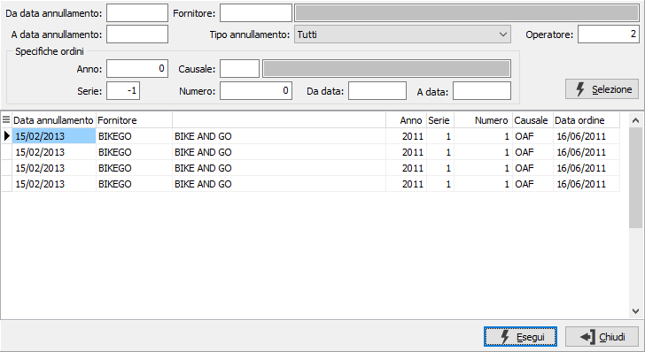
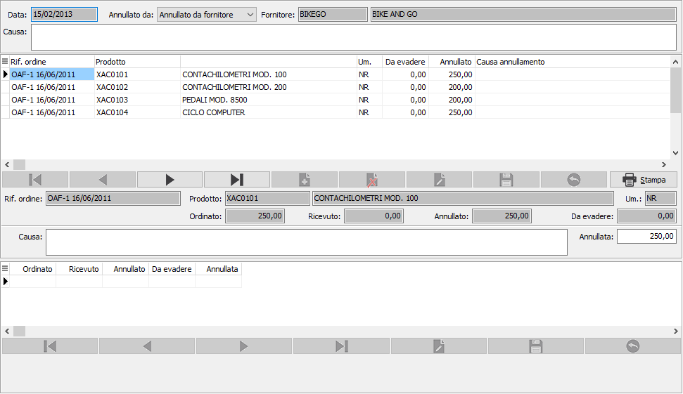
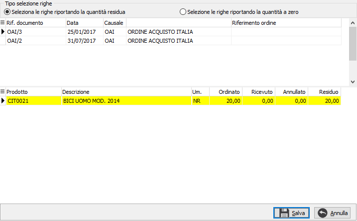

Annullamento ordini fornitori
La funzionalità consente di selezionare ordini non evasi, indicare la quantità annullata e salvare il movimento. Al salvataggio viene incrementata la quantità annullata dell’ordine originale ed è possibile stampare un documento di annullamento.
E’ possibile registrare più movimenti di annullamento per lo stesso rigo ordine; nel caso di cancellazione di un movimento di annullamento viene stornata la quantità annullata dell’ordine originale.
Cliccando due volte sul campo data o premendo il tasto funzione F9, si apre la finestra video di Ricerca annullamento ordini fornitori.
La finestra video di Ricerca annullamento ordini fornitori presenta in primo luogo il pannello di input costituito da alcuni campi per inserire “filtri” o parametri di ricerca che consentono di limitare il numero di documenti da presentare a video. E’ possibile infatti indicare un periodo di date, il fornitore, il tipo di annullamento (da fornitore, interno oppure tutti), l’anno a cui si riferiscono gli ordini da individuare, oppure il codice (con possibilità di ricerca tramite lo zoom F9) della causale ordini da ricercare, la serie dell'ordine, il riferimento, oppure le date di inizio e fine ricerca o più parametri fra quelli indicati. Conoscendolo, è possibile indicare il numero di ordine da ricercare.
Qualsiasi parametro si sia inserito, occorre attivare la selezione cliccando sul bottone Selezione.
Attivata la selezione, nella griglia della sezione video inferiore vengono visualizzati tutti i documenti esistenti coerenti con i parametri di selezione inseriti.

Il documento si compone di una testata dove è necessario inserire la data ed il codice del fornitore; è possibile indicare se l'ordine è stato annullato dal fornitore oppure per motivi interni ed eventualmente specificare una causa che sarà riportata automaticamente su tutti gli ordini inseriti.

Nel corpo vanno inserite le righe che corrispondo ai prodotti degli ordini da annullare, con la relativa quantità e descrizione della causa, che come detto in precedenza, può essere impostata sulla testata e sarà riproposta su ogni rigo inserito; se il prodotto gestisce un dettaglio quantità le quantità saranno imputabili nella parte sottostante il rigo dove deve essere indicato anche il dettaglio (variante/lotto/ubicazione), la quantità del rigo sarà disabilitata; il dettaglio del rigo non può essere eliminato, se non deve essere modificato è sufficiente lasciare la quantità a zero.
L'inserimento del rigo è condizionato dalla selezione del rigo ordine da annullare; al momento in cui si cerca di inserire un nuovo rigo si apre la seguente finestra:

In questa finestra compariranno tutti gli ordini ancora da evadere selezionati in base al fornitore e con data antecedente alla data di registrazione dell'annullamento; nel pannello iniziale si può scegliere se importare le righe selezionate riportando la quantità residua o riportando il valore zero nella quantità; ovviamente in questo caso sarà l'operatore ad inserire sulle righe del documento di annullamento la giusta quantità. La selezione delle righe funziona con il doppio clic sul rigo o tramite il tasto destro del mouse che dà l'accesso ad un menù in cui è possibile effettuare la selezione/deselezione del singolo rigo, di tutte le righe o di tutti gli ordini presenti. La pressione del pulsante Salva comporta la generazione delle righe selezionate nel corpo del documento, se queste saranno cancellate si potrà, solo in fase di inserimento, reinserirle nel documento principale con una nuova selezione; se la riga viene eliminata in fase di variazione sarà necessario effettuare il salvataggio finale per poterla selezionare nuovamente.
Al momento del salvataggio finale, premendo il pulsante Salva presente nella Toolbar o il tasto funzione F10, sarà registrato il documento di annullamento, aggiornati i relativi ordini ed in fase di inserimento sarà richiesto se effettuare la stampa; questa può comunque essere effettuata sempre per singolo rigo, in modalità di visualizzazione del documento, utilizzando il bottone Stampa presente sul navigatore delle righe, oppure utilizzando la funzionalità di Stampa ordini, specificando di voler stampare le quantità annullate.